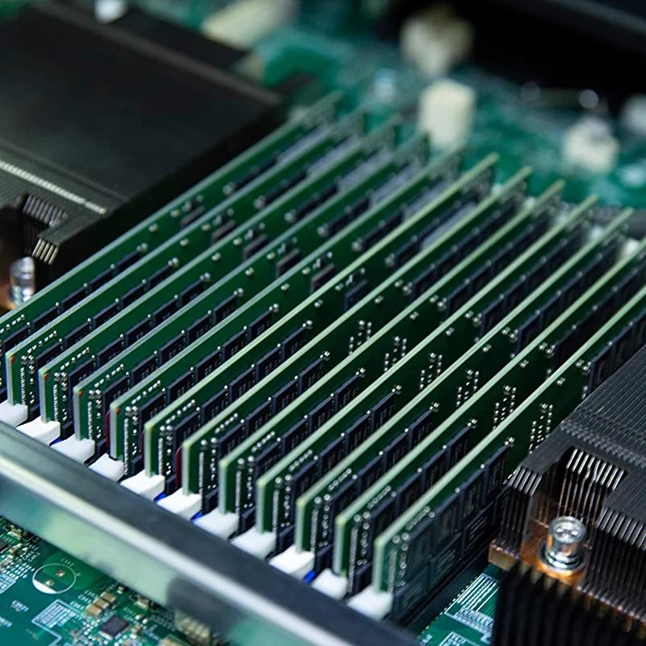

Research
CoreCraft
 Designing New Processor Architectures from Scratch, Brick by Brick
Designing New Processor Architectures from Scratch, Brick by Brick
CoreCraft focuses on revolutionizing the design and functionality of modern processors to address the increasing demands of high-performance and parallel computing. This area explores innovative techniques to enhance computational efficiency, and improve overall processor performance. Central to this research is the development of advanced compiler techniques and hierarchical register file management that streamline data access and storage. These innovations reduce conflicts and inefficiencies, allowing GPUs and CPUs to process data more swiftly and effectively. Our CoreCraft aims to create more powerful, efficient, and versatile processors that can meet the demands of modern computing tasks, from deep learning to complex simulations. By integrating these cutting-edge advancements, this research is paving the way for the next generation of high-performance computing technologies.
VitesseAI
 VitesseAI: AI Acceleration "System"
VitesseAI: AI Acceleration "System"
VitesseAI research seeks to push the boundaries of AI performance, enabling faster and more efficient AI solutions. This field is essential for advancing AI technologies in various industries, from autonomous systems to big data analytics, where high-speed and high-efficiency computation is paramount. VitesseAI focuses on developing innovative methods and architectures to enhance the performance of AI workloads. This domain aims to design both hardware and software to achieve maximum efficiency and speed in AI processing. Our key innovations include designing new software for GPUs or new GPU architectures to handle AI tasks effectively, ensuring that AI workloads run concurrently with minimal resource contention, and designing scalable AI accelerator architectures.
MemDC

Memory-Native Datacenters
MemDC research focuses on developing innovative memory architectures and management techniques to meet the increasing demands of modern datacenters. Our research is pivotal in driving forward the capabilities of modern computing infrastructure, ensuring that memory systems can keep pace with the rapid advancements in processing power and application complexity. This area explores advanced solutions to enhance the performance, efficiency, and reliability of memory systems, crucial for supporting applications ranging from deep learning to datacenter operations. Our key advancements include tiered memory systems that improve energy efficiency for deep learning training, new Compute Express Link (CXL) memory systems for datacenters, and efficient Processing-In-Memory (PIM) architecutures. By leveraging these cutting-edge techniques, MemDC aims to provide robust and scalable solutions that can handle the diverse and intensive memory demands of future applications.
AAS
Architecture-Aware Software
AAS focuses on innovating software to fully leverage the underlying hardware architecture for enhanced performance and efficiency. Our approach is crucial for advanced applications, particularly in environments with limited resources, where maximizing hardware utilization is essential. AAS involves innovative techniques that are tailored to the specific capabilities and constraints of hardware components such as embedded GPUs and SSDs. By understanding and exploiting the architectural details, our research can significantly improve energy efficiency and overall system performance.